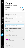
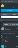
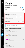
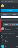

People
People in Prysm (sometimes referred to as Participants) are the people who have access to your project. People can be members or guests.
Guests are people who are invited to the project by a member. Guests can be either of these types:
- A person who does not have a Prysm license. These guests can create a guest account in Prysm after you invite them.
- A person who has a Prysm license, but is not on the same account as the project to which you are inviting them. For example, if you work for Acme Corporation, and you want to invite a collaborator from Generic Incorporated (a company that also uses Prysm), this collaborator will be a guest in your project.
Guests can access the project only while another project member is accessing it. Guests can sign in only through Prysm for web.
In Prysm for web, you can find information about people in the project in the People panel. Open and close the People panel by clicking the People button.

{kind=link}
In Prysm for rooms, information about people in the project is in the Project Participants panel on the right side of the display.

{kind=link}
From the People panel (in Prysm for web) or the Project Participants panel (in Prysm for rooms), you can:
- See who is currently in your project.
- Add or remove members and guests.
- Interact with the project lobby.
- Start Follow Me so that other users can follow a presentation, or stop Follow Me so that participants can collaborate interactively. For more information, see Follow Me Mode.
A project's lobby can include both guests and members.
- For guests in the lobby, any project member can click Admit or Decline, which allows or denies that guest temporary access to the project (see Guests).
- For members in the lobby, the project owner can click Add or Decline, which allows or denies that user to be a member in the project (see Members).
Prysm for web lobby:

{kind=link}
Prysm for rooms lobby:

{kind=link}